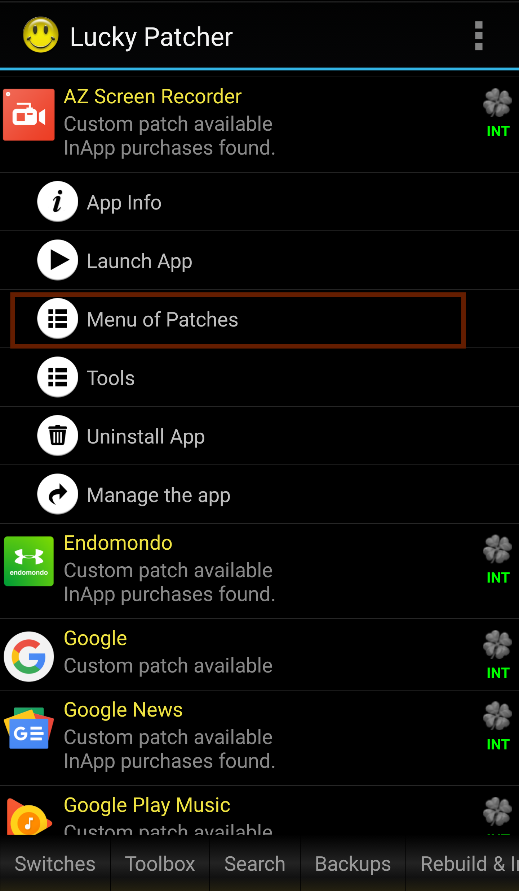
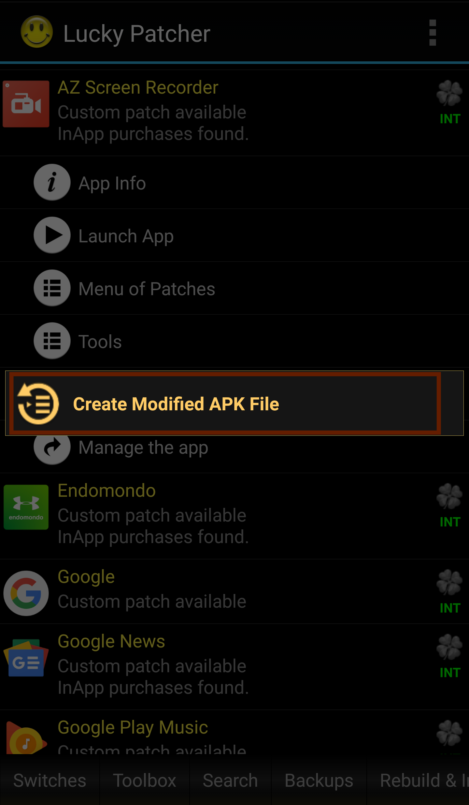
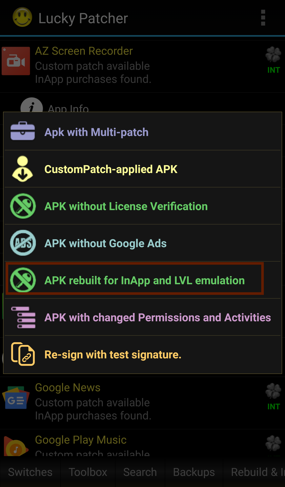
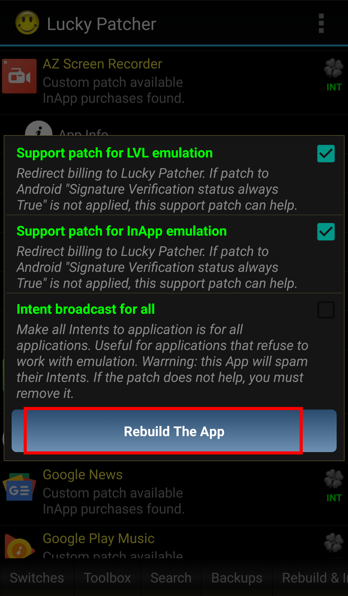

How to use Lucky Patcher

Lucky Patcher is a great tool to hack Android apps and games, block ads, modify app permissions, backup apps, etc. You can also use lucky patcher without root.
These days virtually everyone is addicted to games. Whether they are mobile games or PC games, people are always after them. On the other side, there are many people who are addicted to different other apps like productivity apps, business apps, edification apps, communication apps, etc. The utilization of apps and games is rapidly increasing day by day.
Smartphones are a paramount part of our life and therefore everyone utilizes smartphone apps and games. Android Device users use Google Play Store which has over millions of apps and games. Many of the apps and games are free but some are free just for the rudimentary version. If you opt to utilize all of the features of those apps, you will have to upgrade to the premium version and for that, you will have to pay. As there are many such apps in the Google Play Store so here the question arises how much will you pay for such apps? Are you tired of paying for such Apps? If yes, then you are in the right place. There is an app that allows us to hack in-app purchases for free.
Lucky Patcher
Lucky Patcher is a free App that can hack Android apps and games. It lets you modify many Android Apps and Games in various ways. Lucky Patcher allows you to hack installed apps, remove google ads, remove system apps, modify system apps, modify app permissions, remove license verification from paid apps, move apps to SD Card, backup apps before and after modifying, and much more. Lucky Patcher requires root access but you can also use Lucky Patcher without a rooted device to hack games.
In this guide, we will discuss how to use Lucky patcher without a rooted android device, however, if you have a rooted Android Device then you can see our elaborate guide on how to use Lucky Patcher on a rooted android device. Lucky Patcher isn't a tool that is arduous to utilize but it is a hassle-free implement which requires just a few steps to make a patch for in-app purchases or to make any custom patch. Lucky Patcher isn't available in the google play store, therefore, you can download and install Lucky Patcher from the download link given below.
Requirements
How to use Lucky Patcher
Here's how to use Lucky Patcher:
1. Open Lucky Patcher
Download Lucky Patcher. Open the Lucky Patcher app and you will see a list of apps installed in your Android Device.
2. Tap an app to hack
Tap an app that you want to hack. Now, you will see a menu of different options on your Android Device.
3. Tap on Open Menu of Patches.
From the menu, tap on Open Menu of Patches.

4. Tap Create Modified APK File
After tapping, you will see a list of different patches.

5. Tap APK Rebuild for InApp and LVL emulation
This is the patch to hack any app to get unlimited credits.

6. Tap Rebuild the app
After this, wait for a few seconds until a window pops up in front of you. Now, tap on Go to file and then tap on Uninstall and Install. Allow your Android Phone to reinstall the app(if it asks for it). Once the app is installed, open the app and purchase anything you want.

That is all. You have succeeded in learning how to use Lucky Patcher. If you have any questions or queries regarding this article, feel in liberty to ask us in the comments section. You can additionally contact us on Facebook.